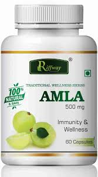

*Amla Benefits & Medicinal Uses
Indian Gooseberry has been given a prominent place in Ayurveda.
In ancient India it was believed that Ambrosia (heavenly nectar) contained all rasas thereby, it could impart immortality.
In that sense Amlaki and Hareetaki stand next by exhibiting five rasas.
Therefore, Gooseberry is considered a "Rasayana" bestowed with anti-aging effects.
Enthusiastic investigations on Amla substantiate almost all of its acclaimed properties.
It has been identified to be a potent antioxidant, immunomodulatory, antistress etc.
Apart from its medicinal use.
It also finds an important place in traditional hair and skin care formulations.
Its cytoprotective role has been investigated in detail.
For Ayurveda Amlaki is considered to be a nature"s boon.
Balances vata
Read more about various ailments, it's causes, symptoms, ayurvedic treatments, etc.

There are numerous Amla benefits and uses as follows:
1. Improves Immunity
Amla benefits include antibacterial & astringent properties which help improve the body's immunity system.
Indian Gooseberry also increases white blood cells which help flush out the toxins from the body.
2.hair care
Amla is used in a lot of shampoos and conditioners
owing to its rich antioxidant & iron content.
Indian Gooseberry contains high levels of Vitamin C which helps reduce hair fall.
It also strengthens the roots & maintains hair color.
Antibacterial properties of Amla helps fight dandruff.
3.Reduces Stress
Amla is a great stress reliever which helps induce sleep and relieve headaches.
4.Eye care
Amla is rich in carotene content which is well known for its powerful effect on vision-related conditions.
Formulation made of Indian Gooseberry and Honey helps to improve eyesight, near-sightedness, and cataracts.
5.Improves Mental Functions
Daily consumption of Amla helps improves nerve health facilitating proper blood flow.
It helps to prevent diseases like dementia and Alzheimer’s.
Indian Gooseberry also helps improve concentration power and memory skills.
6.Chemical Composition
The fruit juice is reported to contain nearly 20 times as much vitamin C as orange juice.
Every 100 gm edible fruit provides 470-680 mg of Vitamin C.
Fruit contains moisture, protein, fat, minerals, fibers and carbohydrate.
Its mineral and vitamin contents include calcium, Phosphorous, iron, carotene, carbohydrate, thiamine, riboflavin besides vitamin C.
7.Treats Anemia
Amla is a rich source of iron, deficiency of which causes anemia.
8.Diuretic
Amla is also diuretic in nature.
It means that Indian Gooseberry helps increase the volume and
frequency of urination which improves the elimination of toxins from the body.
Know more on detoxification .
Pacifies tridoshas.
Read more about various ailments,
it's causes, symptoms, ayurvedic treatments, etc.
Chemical Composition
The fruit juice is reported to contain nearly 20 times as much vitamin C as orange juice.
Every 100 gm edible fruit provides 470-680 mg of Vitamin C.
Fruit contains moisture, protein, fat, minerals, fibers and carbohydrate.
Its mineral and vitamin contents include calcium, Phosphorous, iron, carotene, carbohydrate,
thiamine, riboflavin besides vitamin
A recent study on Amla attributes its strong antioxidant
properties to its small molecular weight tannoid complexes.
TABLETS

